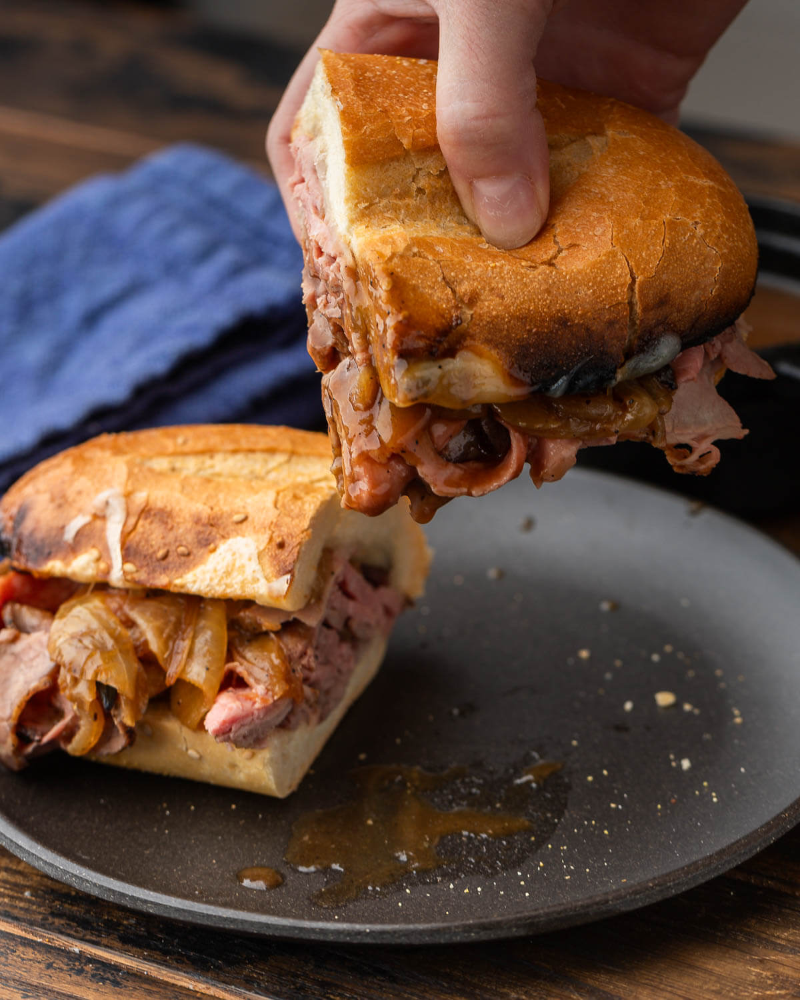

my rating: ★ ★ ★ ★ ★
| Prep time: | Cook time: | Resting time: | Total time: |
|---|---|---|---|
| 20 mins | 50 mins | 2 hrs | 3 hrs |
servings: 6 Sandwiches
This incredible French Dip sandwich combines thinly sliced roast beef and provolone cheese piled onto sub rolls and served with a side of delicious beef jus for dipping.

this photo taken from the original recipe site
Calories: 743kcal | Carbohydrates:72.3g | Fat: 17.8g | Saturated Fat:6.7g | Cholesterol:117mg | Sodium: 1237mg | Fiber: 3.5g | Sugar: 8g | Calcium: 218mg | Iron: 37mg
The original French dip site